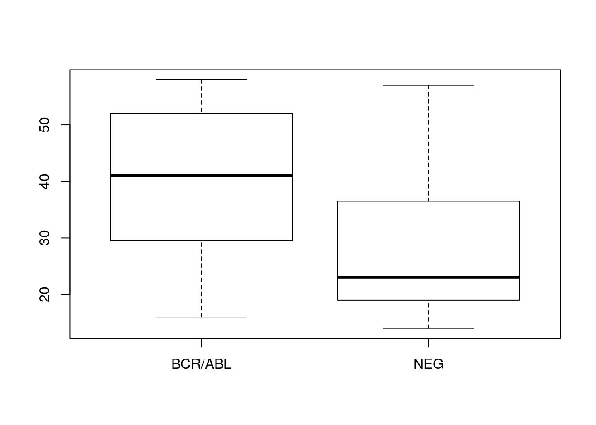
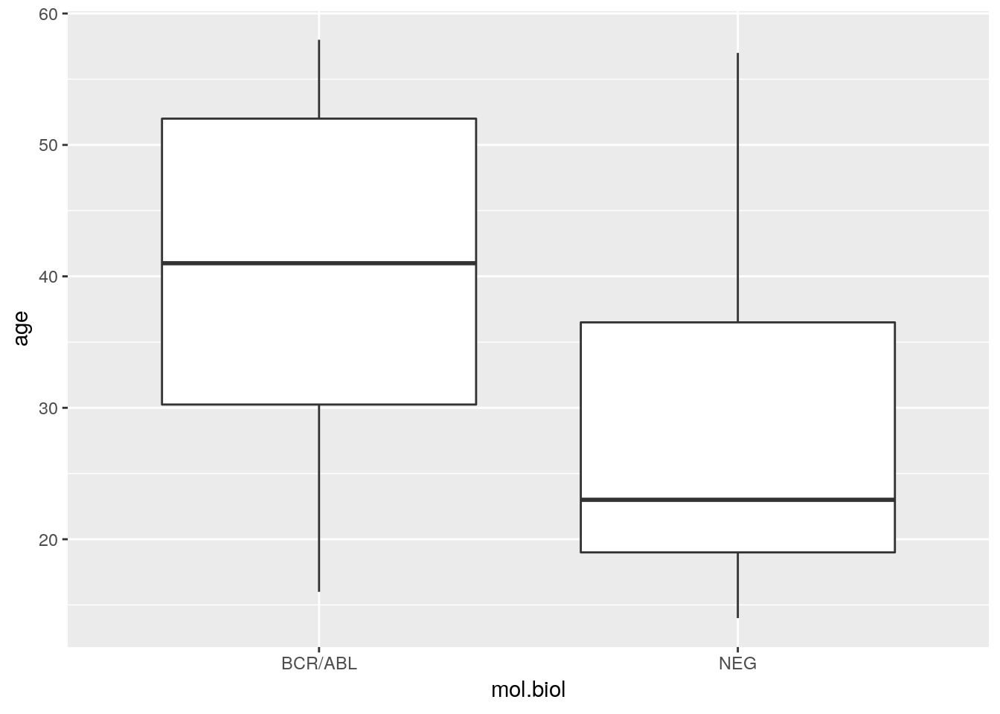
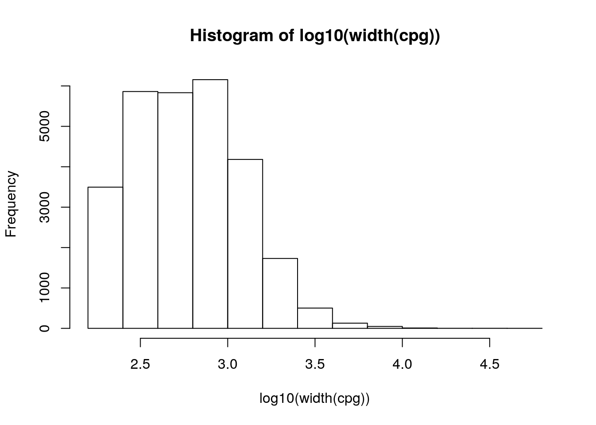

2 100: R and Bioconductor for everyone: an introduction
Authors: Martin Morgan2, Lori Shepherd.
Last modified: 17 July 2018
2.1 Overview
2.1.1 Description
This workshop is intended for those with little or no experience using R or Bioconductor. In the first portion of the workshop, we will explore the basics of using RStudio, essential R data types, composing short scripts and using functions, and installing and using packages that extend base R functionality. The second portion of the workshop orients participants to the Bioconductor collection of R packages for analysis and comprehension of high-throughput genomic data. We will describe how to discover, install, and learn to use Bioconductor packages, and will explore some of the unique ways in which Bioconductor represents genomic data. The workshop will primarily be instructor-led live demos, with participants following along in their own RStudio sessions.
2.1.2 Pre-requisites
This workshop is meant to be introductory, and has no pre-requisites.
Participants will maximize benefit from the workshop by pursuing elementary instructions for using R, such as the introductory course from DataCamp.
2.1.3 Participation
Participants will use RStudio interactively as the instructor moves carefully through short examples of R and Bioconductor code.
2.1.4 R / Bioconductor packages used
- Base R packages, e.g.,
stats,graphics; ggplot2 - Essential Bioconductor packages, e.g., rtracklayer, GenomicRanges, SummarizedExperiment
2.1.5 Time outline
An example for a 45-minute workshop:
| Activity | Time |
|---|---|
| Introduction to R | 45m |
| - Using RStudio | |
| - R vectors and data frames | |
| - Data input and manipulation | |
| - Scripts and functions | |
| - Using R packages | |
| Introduction to Bioconductor | 60m |
| - Project history | |
| - Discovering and using packages | |
| - Working with objects |
2.1.6 Workshop goals and objectives
2.1.7 Learning goals
Part 1: R
- Import text (e.g., ‘comma-separate value’) files, into R.
- Perform manipulations of R data frames.
- Apply R functions for statistical analysis and visualization.
- Use R packages to extend basic functionality.
Part 2: Bioconductor
- Find, install, and learn how to use Bioconductor packages.
- Import and manipulate genomic files and Bioconductor data objects.
- Start an RNA-seq differential expression work flow.
2.1.8 Learning objectives
Part 1: R
- Import the ‘pData.csv’ file describing samples from an experiment.
- ‘Clean’ the pData to include only a subset of values.
- Perform a t-test assessing the relationship between ‘age’ and ‘mol.biol’ (presence of BCR/ABL) amongst samples.
- Visualize the relationship between ‘age’ and ‘mol.biol’ using base R’s
boxplot()function. - Load the ggplot2 package.
- Visualize the relationship between two variables using
ggplot().
Part 2: Bioconductor
- Discover, install, and read the vignette of the DESeq2 package.
- Discover the ‘single cell sequencing’ vignette
- Import BED and GTF files into Bioconductor
- Find regions of overlap between the BED and GTF files.
- Import a matrix and data.frame into Bioconductor’s
SummarizedExperimentobject for RNA-Seq differential expression.
2.2 Introduction to R
2.2.1 RStudio orientation
2.2.2 Very basics
R works by typing into the console. A very simple example is to add the numbers 1 and 2.
1 + 2
#> [1] 3R works best on vectors, and we can construct vectors ‘by hand’ using the function c() (perhaps for _c_oncatenate). Here is a vector of the numbers 1, 3, and 5.
c(1, 3, 5)
#> [1] 1 3 5R has many shortcuts. A very commonly used shortcut is to create a vector representing a sequence of numbers using :. For instance, here is a vector representing the numbers 1 through 5.
1:5
#> [1] 1 2 3 4 5It would be pretty tedious to continually have to enter vectors by hand. R allows objects such as the vector returned by c() to be assigned to variables. The variables can then be referenced at subsequent points in the script.
x <- c(1, 3, 5)
x
#> [1] 1 3 5Since R knows about vectors, it can be very easy to transform all elements of the vector, e.g., taking the log() of x;
log(x)
#> [1] 0.000000 1.098612 1.609438The return value of log(x) is itself a vector, and can be assigned to another variable.
y <- log(x)
y
#> [1] 0.000000 1.098612 1.6094382.2.3 Data input and manipulation
Read data files into R data.frame objects. We start by reading a simple file into R. The file is a ‘csv’ (comma-separated value) file that could have been exported from a spreadsheet. The first few lines of the file include:
"Sample","sex","age","mol.biol"
"01005","M",53,"BCR/ABL"
"01010","M",19,"NEG"
"03002","F",52,"BCR/ABL"
"04006","M",38,"ALL1/AF4"
"04007","M",57,"NEG"The file describes samples used in a classic microarray experiment. It consists of four columns:
Sample: a unique identifiersex: the sex of each patientage: the age of each patientmol.biol: cytological characterization of each patient, e.g.,"BCR/ABL"indicates presence of the classic BCR/ABL translocation, while"NEG"indicates no special cytological information.
We start by asking are to find the path to the file, using a function file.choose(). This will open a dialog box, and we will navigate to the location of a file named "ALL-phenoData.csv". Print the value of fname to view the path that you choose.
fname <- file.choose()
fnameConfirm that the file exists using the file.exists() command.
file.exists(fname)
#> [1] TRUERead the data from the csv file using read.csv(); assign the input to a variable called pdata.
pdata <- read.csv(fname)Viewing the data.frame
We could print the entire data frame to the screen using
pdatabut a smarter way to explore the data is to ask about its dimensions (rows and columns) using dim(), to look at the head() and tail() of the data, and to ask R for a brief summary().
dim(pdata) # 128 rows x 4 columns
#> [1] 128 4
head(pdata) # first six rows
#> Sample sex age mol.biol
#> 1 01005 M 53 BCR/ABL
#> 2 01010 M 19 NEG
#> 3 03002 F 52 BCR/ABL
#> 4 04006 M 38 ALL1/AF4
#> 5 04007 M 57 NEG
#> 6 04008 M 17 NEG
tail(pdata) # last six rows
#> Sample sex age mol.biol
#> 123 49004 M 24 NEG
#> 124 56007 M 37 NEG
#> 125 64005 M 19 NEG
#> 126 65003 M 30 NEG
#> 127 83001 M 29 NEG
#> 128 LAL4 <NA> NA NEG
summary(pdata)
#> Sample sex age mol.biol
#> 01003 : 1 F :42 Min. : 5.00 ALL1/AF4:10
#> 01005 : 1 M :83 1st Qu.:19.00 BCR/ABL :37
#> 01007 : 1 NA's: 3 Median :29.00 E2A/PBX1: 5
#> 01010 : 1 Mean :32.37 NEG :74
#> 02020 : 1 3rd Qu.:45.50 NUP-98 : 1
#> 03002 : 1 Max. :58.00 p15/p16 : 1
#> (Other):122 NA's :5The age element of pdata is a vector of integers and the summary provides a quantitative description of the data. Some values are missing, and these have the special value NA.
The sex and mol.biol vectors are factors. The sex variable has two levels (M, F) while the mol.biol vector has 6 levels. A factor is a statistical concept central to describing data; the levels describe the universe of possible values that the variable can take.
Sample is also a factor, but it should probably be considered a character vector used to identify each sample; we clean this up in just a minute.
In addition to summary(), it can be helpful to use class() to look at the class of each object or column, e.g.,
class(fname)
#> [1] "character"
class(pdata)
#> [1] "data.frame"Reading data, round two
We noted that Sample has been read by R as a factor. Consult the (complicated!) help page for read.csv() and try to understand how to use colClasses to specify how each column of data should be input.
To navigate to the help page, use
?read.csvFocus on the colClasses argument. It is a vector that describes the class each column should be interpretted as. We’d like to read the columns as character, factor, integer, factor. Start by creating a vector of desired values
c("character", "factor", "integer", "factor")
#> [1] "character" "factor" "integer" "factor"Then add another argument to our use of read.csv(), specifying the desired column classes as this vector.
pdata <- read.csv(
fname,
colClasses = c("character", "factor", "integer", "factor")
)
summary(pdata)
#> Sample sex age mol.biol
#> Length:128 F :42 Min. : 5.00 ALL1/AF4:10
#> Class :character M :83 1st Qu.:19.00 BCR/ABL :37
#> Mode :character NA's: 3 Median :29.00 E2A/PBX1: 5
#> Mean :32.37 NEG :74
#> 3rd Qu.:45.50 NUP-98 : 1
#> Max. :58.00 p15/p16 : 1
#> NA's :5Subsetting
A basic operation in R is to subset data. A data.frame is a two-dimensional object, so it is subset by specifying the desired rows and columns. Several different ways of specifying rows and colums are possible. Row selection often involves numeric vectors, logical vectors, and character vectors (selecting the rows with the corresponding rownames()). Column selection is most often with a character vector, but can also be numeric.
pdata[1:5, c("sex", "mol.biol")]
#> sex mol.biol
#> 1 M BCR/ABL
#> 2 M NEG
#> 3 F BCR/ABL
#> 4 M ALL1/AF4
#> 5 M NEG
pdata[1:5, c(2, 3)]
#> sex age
#> 1 M 53
#> 2 M 19
#> 3 F 52
#> 4 M 38
#> 5 M 57Omitting either the row or column index selects all rows or columns
pdata[1:5, ]
#> Sample sex age mol.biol
#> 1 01005 M 53 BCR/ABL
#> 2 01010 M 19 NEG
#> 3 03002 F 52 BCR/ABL
#> 4 04006 M 38 ALL1/AF4
#> 5 04007 M 57 NEGThe subset operator [ generally returns the same type of object as being subset, e.g., above all return values are data.frame objects. It is sometimes desirable to select a single column as a vector. This can be done using $ or [[; note that some values are NA, indicating that the patient’s age is “not available”.
pdata$age
#> [1] 53 19 52 38 57 17 18 16 15 40 33 55 5 18 41 27 27 46 37 36 53 39 53
#> [24] 20 44 28 58 43 48 58 19 26 19 32 17 45 20 16 51 57 29 16 32 15 NA 21
#> [47] 49 38 17 26 48 16 18 17 22 47 21 54 26 19 47 18 52 27 52 18 18 23 16
#> [70] NA 54 25 31 19 24 23 NA 41 37 54 18 19 43 53 50 54 53 49 20 26 22 36
#> [93] 27 50 NA 31 16 48 17 40 22 30 18 22 50 41 40 28 25 16 31 14 24 19 37
#> [116] 23 30 48 22 41 52 32 24 37 19 30 29 NA
pdata[["age"]]
#> [1] 53 19 52 38 57 17 18 16 15 40 33 55 5 18 41 27 27 46 37 36 53 39 53
#> [24] 20 44 28 58 43 48 58 19 26 19 32 17 45 20 16 51 57 29 16 32 15 NA 21
#> [47] 49 38 17 26 48 16 18 17 22 47 21 54 26 19 47 18 52 27 52 18 18 23 16
#> [70] NA 54 25 31 19 24 23 NA 41 37 54 18 19 43 53 50 54 53 49 20 26 22 36
#> [93] 27 50 NA 31 16 48 17 40 22 30 18 22 50 41 40 28 25 16 31 14 24 19 37
#> [116] 23 30 48 22 41 52 32 24 37 19 30 29 NAWe can use class() to determine the type of each column
class(pdata$age)
#> [1] "integer"as well as other functions to manipulate or summarize the data. What do each of the following lines do?
table(pdata$mol.biol)
#>
#> ALL1/AF4 BCR/ABL E2A/PBX1 NEG NUP-98 p15/p16
#> 10 37 5 74 1 1
table(is.na(pdata$age))
#>
#> FALSE TRUE
#> 123 5
levels(pdata$sex)
#> [1] "F" "M"Basic data manipulations
We’ve seen (e.g., log(), above) that numeric vectors can be transformed by mathematical functions. Similar functions are available for other data types. A very common scenario is to create logical vectors that are then used to subset objects. Here we compare each element of the sex column to "F". The result indicates which rows in the pdata correspond to indivdudals with sex "F".
pdata$sex == "F"
#> [1] FALSE FALSE TRUE FALSE FALSE FALSE TRUE FALSE FALSE FALSE FALSE
#> [12] FALSE FALSE FALSE FALSE TRUE FALSE FALSE FALSE TRUE FALSE FALSE
#> [23] FALSE FALSE FALSE FALSE TRUE TRUE TRUE TRUE TRUE TRUE FALSE
#> [34] FALSE TRUE TRUE TRUE TRUE TRUE FALSE TRUE FALSE TRUE FALSE
#> [45] NA FALSE TRUE FALSE TRUE TRUE TRUE FALSE FALSE FALSE FALSE
#> [56] TRUE FALSE TRUE FALSE TRUE FALSE FALSE TRUE FALSE FALSE FALSE
#> [67] FALSE FALSE FALSE FALSE TRUE FALSE FALSE TRUE TRUE FALSE FALSE
#> [78] FALSE TRUE FALSE FALSE FALSE TRUE TRUE TRUE FALSE FALSE FALSE
#> [89] FALSE TRUE FALSE FALSE TRUE FALSE NA FALSE TRUE TRUE FALSE
#> [100] TRUE FALSE FALSE FALSE FALSE FALSE FALSE TRUE TRUE FALSE TRUE
#> [111] FALSE FALSE FALSE TRUE FALSE FALSE TRUE FALSE FALSE FALSE FALSE
#> [122] FALSE FALSE FALSE FALSE FALSE FALSE NAA more elaborate example identifies rows corresponding to females greater than 50 years of age. Note that some comparisons are NA; why is that?
(pdata$sex == "F") & (pdata$age > 50)
#> [1] FALSE FALSE TRUE FALSE FALSE FALSE FALSE FALSE FALSE FALSE FALSE
#> [12] FALSE FALSE FALSE FALSE FALSE FALSE FALSE FALSE FALSE FALSE FALSE
#> [23] FALSE FALSE FALSE FALSE TRUE FALSE FALSE TRUE FALSE FALSE FALSE
#> [34] FALSE FALSE FALSE FALSE FALSE TRUE FALSE FALSE FALSE FALSE FALSE
#> [45] NA FALSE FALSE FALSE FALSE FALSE FALSE FALSE FALSE FALSE FALSE
#> [56] FALSE FALSE TRUE FALSE FALSE FALSE FALSE TRUE FALSE FALSE FALSE
#> [67] FALSE FALSE FALSE FALSE TRUE FALSE FALSE FALSE FALSE FALSE FALSE
#> [78] FALSE FALSE FALSE FALSE FALSE FALSE TRUE FALSE FALSE FALSE FALSE
#> [89] FALSE FALSE FALSE FALSE FALSE FALSE NA FALSE FALSE FALSE FALSE
#> [100] FALSE FALSE FALSE FALSE FALSE FALSE FALSE FALSE FALSE FALSE FALSE
#> [111] FALSE FALSE FALSE FALSE FALSE FALSE FALSE FALSE FALSE FALSE FALSE
#> [122] FALSE FALSE FALSE FALSE FALSE FALSE NAAnother elaborate comparison is %in%, which asks whether each element in the vector on the left-hand side of %in% is contained in the set of values on the right-hand side, for example, which elements of the pdata$mol.biol column are in the set "BCR/ABL" or "NEG"?
table( pdata$mol.biol )
#>
#> ALL1/AF4 BCR/ABL E2A/PBX1 NEG NUP-98 p15/p16
#> 10 37 5 74 1 1
pdata$mol.biol %in% c("BCR/ABL", "NEG")
#> [1] TRUE TRUE TRUE FALSE TRUE TRUE TRUE TRUE TRUE TRUE TRUE
#> [12] TRUE FALSE TRUE TRUE TRUE TRUE TRUE TRUE TRUE TRUE TRUE
#> [23] TRUE TRUE FALSE TRUE FALSE TRUE FALSE TRUE TRUE TRUE TRUE
#> [34] TRUE TRUE FALSE TRUE TRUE TRUE TRUE TRUE FALSE TRUE TRUE
#> [45] TRUE TRUE TRUE FALSE FALSE TRUE TRUE TRUE FALSE TRUE TRUE
#> [56] TRUE TRUE TRUE TRUE TRUE FALSE TRUE FALSE TRUE TRUE TRUE
#> [67] TRUE TRUE TRUE TRUE TRUE FALSE TRUE TRUE FALSE TRUE TRUE
#> [78] TRUE TRUE TRUE TRUE TRUE TRUE TRUE TRUE TRUE TRUE FALSE
#> [89] TRUE TRUE TRUE TRUE TRUE TRUE FALSE TRUE FALSE TRUE TRUE
#> [100] TRUE TRUE TRUE TRUE TRUE TRUE TRUE TRUE TRUE TRUE TRUE
#> [111] TRUE TRUE TRUE TRUE TRUE TRUE TRUE TRUE TRUE TRUE TRUE
#> [122] TRUE TRUE TRUE TRUE TRUE TRUE TRUEThe subset() function can be used to perform the subset, e.g., selecting all records of females older than 50
subset(pdata, sex == "F" & age > 50)
#> Sample sex age mol.biol
#> 3 03002 F 52 BCR/ABL
#> 27 16004 F 58 ALL1/AF4
#> 30 20002 F 58 BCR/ABL
#> 39 24011 F 51 BCR/ABL
#> 58 28021 F 54 BCR/ABL
#> 63 28032 F 52 ALL1/AF4
#> 71 30001 F 54 BCR/ABL
#> 84 57001 F 53 NEGThe return value of subset() can be assigned to a variable, so the below creates a subset of pdata corresponding to indivdiuals whose mol.biol is either "BCR/ABL" or "NEG"; the result is assigned to a variable bcrabl.
bcrabl <- subset(pdata, mol.biol %in% c("BCR/ABL", "NEG"))
dim( bcrabl )
#> [1] 111 4Here’s a tabular summary of the levels of the mol.biol factor in bcrabl
table(bcrabl$mol.biol)
#>
#> ALL1/AF4 BCR/ABL E2A/PBX1 NEG NUP-98 p15/p16
#> 0 37 0 74 0 0Note that the factor includes levels that are not actually present in the subset. For our work below, we’d like to remove the unused levels. This can be done by calling the factor() function
factor(bcrabl$mol.biol)
#> [1] BCR/ABL NEG BCR/ABL NEG NEG NEG NEG NEG
#> [9] BCR/ABL BCR/ABL NEG NEG BCR/ABL NEG BCR/ABL BCR/ABL
#> [17] BCR/ABL BCR/ABL NEG BCR/ABL BCR/ABL NEG BCR/ABL NEG
#> [25] BCR/ABL NEG BCR/ABL NEG BCR/ABL BCR/ABL NEG BCR/ABL
#> [33] BCR/ABL BCR/ABL NEG BCR/ABL NEG NEG NEG BCR/ABL
#> [41] BCR/ABL BCR/ABL NEG NEG NEG NEG BCR/ABL BCR/ABL
#> [49] NEG NEG NEG NEG BCR/ABL NEG NEG NEG
#> [57] NEG NEG BCR/ABL BCR/ABL NEG NEG BCR/ABL BCR/ABL
#> [65] NEG NEG NEG NEG BCR/ABL NEG BCR/ABL BCR/ABL
#> [73] BCR/ABL NEG NEG BCR/ABL NEG BCR/ABL BCR/ABL NEG
#> [81] NEG NEG NEG NEG NEG NEG NEG NEG
#> [89] NEG NEG NEG NEG NEG NEG NEG NEG
#> [97] NEG NEG NEG NEG NEG NEG NEG NEG
#> [105] NEG NEG NEG NEG NEG NEG NEG
#> Levels: BCR/ABL NEGWe can then update the mol.biol column of bcrabl by assigning new values to it with <-.
bcrabl$mol.biol <- factor(bcrabl$mol.biol)
table(bcrabl$mol.biol)
#>
#> BCR/ABL NEG
#> 37 74Exploratory data analysis
A very useful concept in R is the formula. This is specified in a form like lhs ~ rhs. The left-hand side is typically a response (dependent) variable, and the right-hand side a description of the independent variables that one is interested in. I ‘say’ a formula like age ~ mol.biol as “age as a function of mol.biol”.
To get a sense of the use of formulas in R, and the ease with which one can explore data, use the boxplot() function to visualize the relationship between age as a function of molecular biology.
boxplot(age ~ mol.biol, bcrabl)
Consult the help page ?boxplot to figure out how to add “Age” as the y-axis label.
The boxplot suggests that in our sample individuals with BCR/ABL are on average older than individuals classified as NEG. Confirm this using t.test().
t.test(age ~ mol.biol, bcrabl)
#>
#> Welch Two Sample t-test
#>
#> data: age by mol.biol
#> t = 4.8172, df = 68.529, p-value = 8.401e-06
#> alternative hypothesis: true difference in means is not equal to 0
#> 95 percent confidence interval:
#> 7.13507 17.22408
#> sample estimates:
#> mean in group BCR/ABL mean in group NEG
#> 40.25000 28.07042It might be surprising that the df (degrees of freedom) are not a round number, but 68.592. This is because by default R performs a t-test that allows for variances to differ between groups. Consult the ?t.test help page to figure out to perform a simpler form of the t-test, where variances are equal.
2.2.4 Writing R scripts
2.2.5 Using packages
R functions are made available in packages. All the functions that we have used so far are implemented in packages that are distributed with R. There are actually more than 15,000 R packages available for a wide variety of purposes. The general challenge we explore here is how to discover, install, and use one of these packages.
Discover
The most common place to find R packages in on the comprehensive R archive network, CRAN.
Visit CRAN at https://cran.r-project.org, click on the ‘Packages’ link, and the table of available packages sorted by name. Find the ggplot2 package and peruse the information you are presented with. What does this package do?
The large number of R packages can make finding the ‘best’ packages for a particular purpose difficult to identify. From https://cran.r-project.org, click on the ‘Task Views’ link and explore a topic interesting to you.
Install (once only per R installation)
One useful packages have been identified, they need to be installed into R. This only needs to be done once per R installation. The following installs the ggplot2 and tibble packages; you DO NOT need to do this command because ggplot2 is already installed on your AMI.
## No need to do this...
install.packages(c("ggplot2", "tibble"))Use
Packages that are installed on your system are not available for use until they are attached to the current R session. Use library() to attach the ggplot2 package.
library("ggplot2")Look up help on ?ggplot. Peruse especially the examples at the bottom of the help page. The idea is that one identifies the data set to be used, and the variables with the data to be used as the x and y ‘aesthetics’
ggplot(brcabl, aes(x = mol.biol, y = age))One then adds ‘geoms’ to the plot, for instance the boxplot geom
ggplot(bcrabl, aes(x = mol.biol, y = age)) + geom_boxplot()
#> Warning: Removed 4 rows containing non-finite values (stat_boxplot).
Use xlab() and ylab() to enhance the plot with more meaning x and y labels; see the help page ?xlab, especially the example section, for hints on how to modify the graph.
The grammar of graphics implemented by ggplot2 is a very powerful and expressive system for producing appealing visualizations, and is widely used in the R community.
2.3 Introduction to Bioconductor
Bioconductor is a collection of more than 1,500 packages for the statistical analysis and comprehension of high-throughput genomic data. Originally developed for microarrays, Bioconductor packages are now used in a wide range of analyses, including bulk and single-cell RNA-seq, ChIP seq, copy number analysis, microarray methylation and classic expression analysis, flow cytometry, and many other domains.
This section of the workshop introduces the essential of Bioconductor package discovery, installation, and use.
2.3.1 Discovering, installing, and learning how to use Bioconductor packages
Discovery
The web site at https://bioconductor.org contains descriptions of all Bioconductor packages, as well as essential reference material for all levels of user.
Packages available in Bioconductor are summarized at https://bioconductor.org/packages, also linked from the front page of the web site. The widget on the left summarizes four distinct types of Bioconductor packages
‘Software’ packages implement particular analyses or other functionality, e.g., querying web-based resources or importing common file formats to Bioconductor objects.
‘Annotation’ packages contain data that can be helpful in placing analysis results in context, for example: mapping between gene symbols such as “BRCA1” and Ensembl or Entrez gene identifiers; classifying genes in terms of gene ontology; describing the genomic coordinates of exons, transcripts, and genes; and representing whole genome sequences of common organisms.
‘Experiment data’ packages contain highly curated data sets that can be useful for learning and teaching (e.g., the airway package and data set used in the DESeq2 package for the analysis of bulk RNA-seq differential expression) or placing results in context (e.g., the curatedTCGAData package for conveniently accessing TCGA data in a way that allows very smooth integeration into Bioconductor analyses).
‘Workflow’ packages that summarize common work flows, e.g., simpleSingleCell for single-cell RNA-seq expression analysis.
Installation
Like CRAN packages, Bioconductor packages need to be installed only once per R installation, and then attached to each session where they are going to be used.
Bioconductor packages are installed slightly differently from CRAN packages. The first step is to install the BiocManager package from CRAN.
if (!"BiocManager" %in% rownames(intalled.packages()))
install.packages("BiocManager", repos="https://cran.r-project.org")The next step is to install the desired Bioconductor packages. The syntax to install the rtracklayer and GenomicRanges packages is
BiocManager::install(c("rtracklayer", "GenomicRanges"))Bioconductor packages tend to depend on one another quite alot, so it is important that the correct versions of all packages are installed. Validate your installation (not necessary during the course) with
BiocManager::valid()A convenient function in BiocManager is available(), which accepts a regular expression to find matching packages. The following finds all ‘TxDb’ packages (describing exon, transcript, and gene coordinates) for Homo sapiens.
BiocManager::available("TxDb.Hsapiens")
#> [1] "TxDb.Hsapiens.BioMart.igis"
#> [2] "TxDb.Hsapiens.UCSC.hg18.knownGene"
#> [3] "TxDb.Hsapiens.UCSC.hg19.knownGene"
#> [4] "TxDb.Hsapiens.UCSC.hg19.lincRNAsTranscripts"
#> [5] "TxDb.Hsapiens.UCSC.hg38.knownGene"Learning and support
Each package is linked to a ‘landing page’, e.g., DESeq2 that contains a description of the package, authors, perhaps literature citations where the software is described, and installation instructions.
An important part of Bioconductor packages are ‘vignettes’ which describe how the package is to be used. Vignettes are linked from package landing pages, and are available from within R using
browseVignettes("simpleSingleCell")Users can get support on using packages at https://support.bioconductor.org, a question-and-answer style forum where response usually come quickly and often from very knowledgable users or the package developer. There are many additional sources of support, including course material linked from the home page.
2.3.2 Working with Genomic Ranges
This section introduces two useful packages for general-purpose work on genomic coordinates. The rtracklayer package provides the import() function to read many types of genomic files (e.g., BED, GTF, VCF, FASTA) into Bioconductor objects. The GenomicRanges package provides functions for manipulating genomic ranges, i.e., descriptions of exons, genes, ChIP peaks, called variants, … as coordinates in genome space.
Start by attaching the rtracklayer and GenomicRanges packages to our session.
library("rtracklayer")
library("GenomicRanges")Importing data
We’ll read in a BED file derived from the UCSC genome browser. The file contains the coordinates of all CpG islands in the human genome, and is described at the UCSC table browser. Here are the first few lines of the file, giving the chromosme, start and end coordinates, and identifier of each CpG island.
chr1 155188536 155192004 CpG:_361
chr1 2226773 2229734 CpG:_366
chr1 36306229 36307408 CpG:_110
chr1 47708822 47710847 CpG:_164
chr1 53737729 53739637 CpG:_221
chr1 144179071 144179313 CpG:_20Use file.choose() to find the file
fname <- file.choose() # CpGislands.Hsapiens.hg38.UCSC.bedfname
#> [1] "100_Morgan_RBiocForAll/CpGislands.Hsapiens.hg38.UCSC.bed"
file.exists(fname)
#> [1] TRUEThen use import() from rtracklayer to read the data into R. The end result is a GenomicRanges object describing each CpG island.
cpg <- import(fname)
cpg
#> GRanges object with 30477 ranges and 1 metadata column:
#> seqnames ranges strand | name
#> <Rle> <IRanges> <Rle> | <character>
#> [1] chr1 155188537-155192004 * | CpG:_361
#> [2] chr1 2226774-2229734 * | CpG:_366
#> [3] chr1 36306230-36307408 * | CpG:_110
#> [4] chr1 47708823-47710847 * | CpG:_164
#> [5] chr1 53737730-53739637 * | CpG:_221
#> ... ... ... ... . ...
#> [30473] chr22_KI270734v1_random 131010-132049 * | CpG:_102
#> [30474] chr22_KI270734v1_random 161257-161626 * | CpG:_55
#> [30475] chr22_KI270735v1_random 17221-18098 * | CpG:_100
#> [30476] chr22_KI270738v1_random 4413-5280 * | CpG:_80
#> [30477] chr22_KI270738v1_random 6226-6467 * | CpG:_34
#> -------
#> seqinfo: 254 sequences from an unspecified genome; no seqlengthsClosely compare the coordinates of the first few ranges from the file with the first few ranges in the Bioconductor representation. The BED format specification says that coordinates are 0-based, and intervals are half-open (the ‘start’ coordinate is in the range, the ‘end’ coordinate is immediately after the range; this makes some computations easy). Bioconductor’s convention is that coordinates are 1-based and closed (i.e., both start and end coordinates are included in the range). rtracklayer’s import() function has adjusted coordinates to follow Bioconductor conventions.
Working with genomic ranges
For convenience and to illustrate functionality, let’s work only with the ‘standard’ chromosomes 1 - 22 autosomal, X, and Y chromosomes. Look up the help page ?keepStandardChromosomes for an explanation of pruning.mode=.
cpg <- keepStandardChromosomes(cpg, pruning.mode = "coarse")
cpg
#> GRanges object with 27949 ranges and 1 metadata column:
#> seqnames ranges strand | name
#> <Rle> <IRanges> <Rle> | <character>
#> [1] chr1 155188537-155192004 * | CpG:_361
#> [2] chr1 2226774-2229734 * | CpG:_366
#> [3] chr1 36306230-36307408 * | CpG:_110
#> [4] chr1 47708823-47710847 * | CpG:_164
#> [5] chr1 53737730-53739637 * | CpG:_221
#> ... ... ... ... . ...
#> [27945] chr22 50704375-50704880 * | CpG:_38
#> [27946] chr22 50710878-50711294 * | CpG:_41
#> [27947] chr22 50719959-50721632 * | CpG:_180
#> [27948] chr22 50730600-50731304 * | CpG:_65
#> [27949] chr22 50783345-50783889 * | CpG:_63
#> -------
#> seqinfo: 24 sequences from an unspecified genome; no seqlengthsThere are two parts to a GenomicRanges object. The seqnames (chromosomes, in the present case), start and end coordinates, and strand are required. Additional elements such as name in the current example are optional. Required components are accessed by functions such as start(), end() and width(). Optional components can be accessed using the $ notation.
head( start(cpg) )
#> [1] 155188537 2226774 36306230 47708823 53737730 144179072
head( cpg$name )
#> [1] "CpG:_361" "CpG:_366" "CpG:_110" "CpG:_164" "CpG:_221" "CpG:_20"Use the width() accessor function to extract a vector of widths of each CpG island. Transform the values using log10(), and visualize the distribution using hist().
hist(log10(width(cpg)))
Use subset() to select the CpG islands on chromosomes 1 and 2.
subset(cpg, seqnames %in% c("chr1", "chr2"))
#> GRanges object with 4217 ranges and 1 metadata column:
#> seqnames ranges strand | name
#> <Rle> <IRanges> <Rle> | <character>
#> [1] chr1 155188537-155192004 * | CpG:_361
#> [2] chr1 2226774-2229734 * | CpG:_366
#> [3] chr1 36306230-36307408 * | CpG:_110
#> [4] chr1 47708823-47710847 * | CpG:_164
#> [5] chr1 53737730-53739637 * | CpG:_221
#> ... ... ... ... . ...
#> [4213] chr2 242003256-242004412 * | CpG:_79
#> [4214] chr2 242006590-242010686 * | CpG:_263
#> [4215] chr2 242045491-242045723 * | CpG:_16
#> [4216] chr2 242046615-242047706 * | CpG:_170
#> [4217] chr2 242088150-242089411 * | CpG:_149
#> -------
#> seqinfo: 24 sequences from an unspecified genome; no seqlengthsGenomic annotations
Earlier we mentioned ‘Annotation data’ packages. An example is the TxDb.* family of packages. These packages contain information on the genomic coordinates of exons, genes, transcripts, etc. Attach the TxDb package corresponding to the Homo sapiens hg38 genome build using the UCSC ‘knownGene’ track.
library("TxDb.Hsapiens.UCSC.hg38.knownGene")Extract the coordinates of all transcripts
tx <- transcripts(TxDb.Hsapiens.UCSC.hg38.knownGene)
tx
#> GRanges object with 197782 ranges and 2 metadata columns:
#> seqnames ranges strand | tx_id tx_name
#> <Rle> <IRanges> <Rle> | <integer> <character>
#> [1] chr1 29554-31097 + | 1 uc057aty.1
#> [2] chr1 30267-31109 + | 2 uc057atz.1
#> [3] chr1 30366-30503 + | 3 uc031tlb.1
#> [4] chr1 69091-70008 + | 4 uc001aal.1
#> [5] chr1 160446-161525 + | 5 uc057aum.1
#> ... ... ... ... . ... ...
#> [197778] chrUn_KI270750v1 148668-148843 + | 197778 uc064xrp.1
#> [197779] chrUn_KI270752v1 144-268 + | 197779 uc064xrq.1
#> [197780] chrUn_KI270752v1 21813-21944 + | 197780 uc064xrt.1
#> [197781] chrUn_KI270752v1 3497-3623 - | 197781 uc064xrr.1
#> [197782] chrUn_KI270752v1 9943-10067 - | 197782 uc064xrs.1
#> -------
#> seqinfo: 455 sequences (1 circular) from hg38 genomeKeep only the standard chromosomes, to work smoothly with our cpg object.
tx <- keepStandardChromosomes(tx, pruning.mode="coarse")
tx
#> GRanges object with 182435 ranges and 2 metadata columns:
#> seqnames ranges strand | tx_id tx_name
#> <Rle> <IRanges> <Rle> | <integer> <character>
#> [1] chr1 29554-31097 + | 1 uc057aty.1
#> [2] chr1 30267-31109 + | 2 uc057atz.1
#> [3] chr1 30366-30503 + | 3 uc031tlb.1
#> [4] chr1 69091-70008 + | 4 uc001aal.1
#> [5] chr1 160446-161525 + | 5 uc057aum.1
#> ... ... ... ... . ... ...
#> [182431] chrM 5826-5891 - | 182431 uc064xpa.1
#> [182432] chrM 7446-7514 - | 182432 uc064xpb.1
#> [182433] chrM 14149-14673 - | 182433 uc064xpm.1
#> [182434] chrM 14674-14742 - | 182434 uc022bqv.3
#> [182435] chrM 15956-16023 - | 182435 uc022bqx.2
#> -------
#> seqinfo: 25 sequences (1 circular) from hg38 genomeOverlaps
A very useful operation is to count overlaps in two distinct genomic ranges objects. The following counts the number of CpG islands that overlap each transcript. Related functions include findOverlaps(), nearest(), precede(), and follow().
olaps <- countOverlaps(tx, cpg)
length(olaps) # 1 count per transcript
#> [1] 182435
table(olaps)
#> olaps
#> 0 1 2 3 4 5 6 7 8 9 10 11
#> 94621 70551 10983 3228 1317 595 351 214 153 93 64 39
#> 12 13 14 15 16 17 18 19 20 21 22 23
#> 41 31 21 20 17 8 14 8 7 3 6 6
#> 24 25 26 27 28 29 30 31 32 33 34 35
#> 3 2 4 1 3 2 6 5 3 3 1 2
#> 36 37 38 63
#> 3 1 1 4Calculations such as countOverlaps() can be added to the GRanges object, tightly coupling derived data with the original annotation.
tx$cpgOverlaps <- countOverlaps(tx, cpg)
tx
#> GRanges object with 182435 ranges and 3 metadata columns:
#> seqnames ranges strand | tx_id tx_name
#> <Rle> <IRanges> <Rle> | <integer> <character>
#> [1] chr1 29554-31097 + | 1 uc057aty.1
#> [2] chr1 30267-31109 + | 2 uc057atz.1
#> [3] chr1 30366-30503 + | 3 uc031tlb.1
#> [4] chr1 69091-70008 + | 4 uc001aal.1
#> [5] chr1 160446-161525 + | 5 uc057aum.1
#> ... ... ... ... . ... ...
#> [182431] chrM 5826-5891 - | 182431 uc064xpa.1
#> [182432] chrM 7446-7514 - | 182432 uc064xpb.1
#> [182433] chrM 14149-14673 - | 182433 uc064xpm.1
#> [182434] chrM 14674-14742 - | 182434 uc022bqv.3
#> [182435] chrM 15956-16023 - | 182435 uc022bqx.2
#> cpgOverlaps
#> <integer>
#> [1] 1
#> [2] 0
#> [3] 0
#> [4] 0
#> [5] 0
#> ... ...
#> [182431] 0
#> [182432] 0
#> [182433] 0
#> [182434] 0
#> [182435] 0
#> -------
#> seqinfo: 25 sequences (1 circular) from hg38 genomeIt is then possible to perform coordinated actions, e.g., subsetting the GRanges objects for transcripts satisfying particular conditions, in a coordinated fashion where the software does all the book-keeping to makes sure the correct ranges are selected.
subset(tx, cpgOverlaps > 10)
#> GRanges object with 265 ranges and 3 metadata columns:
#> seqnames ranges strand | tx_id tx_name
#> <Rle> <IRanges> <Rle> | <integer> <character>
#> [1] chr1 2050470-2185395 + | 213 uc001aiq.3
#> [2] chr1 2050485-2146108 + | 214 uc057bkd.1
#> [3] chr1 2073462-2185390 + | 219 uc001air.4
#> [4] chr1 2073986-2185190 + | 221 uc010nyw.3
#> [5] chr1 2104716-2185393 + | 227 uc001ais.4
#> ... ... ... ... . ... ...
#> [261] chrX 40051246-40177329 - | 179887 uc004deo.4
#> [262] chrX 40051248-40177329 - | 179889 uc004dep.5
#> [263] chrX 40062955-40177320 - | 179892 uc064yov.1
#> [264] chrY 333963-386710 - | 182211 uc004fot.4
#> [265] chrY 344896-386955 - | 182217 uc011nah.3
#> cpgOverlaps
#> <integer>
#> [1] 15
#> [2] 11
#> [3] 13
#> [4] 13
#> [5] 11
#> ... ...
#> [261] 11
#> [262] 11
#> [263] 11
#> [264] 14
#> [265] 12
#> -------
#> seqinfo: 25 sequences (1 circular) from hg38 genomeCan you think of other situations where one might calculate derived values and couple these with GRanges or similar objects?
2.3.3 Working with summarized experimental data
This section introduces another broadly useful package and data structure, the SummarizedExperiment package and SummarizedExperiment object.

The SummarizedExperiment object has matrix-like properties – it has two dimensions and can be subset by ‘rows’ and ‘columns’. The assay() data of a SummarizedExperiment experiment contains one or more matrix-like objects where rows represent features of interest (e.g., genes), columns represent samples, and elements of the matrix represent results of a genomic assay (e.g., counts of reads overlaps genes in each sample of an bulk RNA-seq differential expression assay.
Object construction
The SummarizedExperiment coordinates assays with (optional) descriptions of rows and columns. We start by reading in a simple data.frame describing 8 samples from an RNASeq experiment looking at dexamethasone treatment across 4 human smooth muscle cell lines; use browseVignettes("airway") for a more complete description of the experiment and data processing. Read the column data in using file.choose() and read.csv().
fname <- file.choose() # airway_colData.csv
fnameWe want the first column the the data to be treated as row names (sample identifiers) in the data.frame, so read.csv() has an extra argument to indicate this.
colData <- read.csv(fname, row.names = 1)
colData
#> SampleName cell dex albut Run avgLength Experiment
#> SRR1039508 GSM1275862 N61311 untrt untrt SRR1039508 126 SRX384345
#> SRR1039509 GSM1275863 N61311 trt untrt SRR1039509 126 SRX384346
#> SRR1039512 GSM1275866 N052611 untrt untrt SRR1039512 126 SRX384349
#> SRR1039513 GSM1275867 N052611 trt untrt SRR1039513 87 SRX384350
#> SRR1039516 GSM1275870 N080611 untrt untrt SRR1039516 120 SRX384353
#> SRR1039517 GSM1275871 N080611 trt untrt SRR1039517 126 SRX384354
#> SRR1039520 GSM1275874 N061011 untrt untrt SRR1039520 101 SRX384357
#> SRR1039521 GSM1275875 N061011 trt untrt SRR1039521 98 SRX384358
#> Sample BioSample
#> SRR1039508 SRS508568 SAMN02422669
#> SRR1039509 SRS508567 SAMN02422675
#> SRR1039512 SRS508571 SAMN02422678
#> SRR1039513 SRS508572 SAMN02422670
#> SRR1039516 SRS508575 SAMN02422682
#> SRR1039517 SRS508576 SAMN02422673
#> SRR1039520 SRS508579 SAMN02422683
#> SRR1039521 SRS508580 SAMN02422677The data are from the Short Read Archive, and the row names, SampleName, Run, Experiment, Sampel, and BioSample columns are classifications from the archive. Additional columns include:
cell: the cell line used. There are four cell lines.dex: whether the sample was untreated, or treated with dexamethasone.albut: a second treatment, which we ignoreavgLength: the sample-specific average length of the RNAseq reads estimated in the experiment.
Assay data
Now import the assay data from the file “airway_counts.csv”
fname <- file.choose() # airway_counts.csv
fnamecounts <- read.csv(fname, row.names=1)Although the data are read as a data.frame, all columns are of the same type (integer-valued) and represent the same attribute; the data is really a matrix rather than data.frame, so we coerce to matrix using as.matrix().
counts <- as.matrix(counts)We see the dimensions and first few rows of the counts matrix
dim(counts)
#> [1] 33469 8
head(counts)
#> SRR1039508 SRR1039509 SRR1039512 SRR1039513 SRR1039516
#> ENSG00000000003 679 448 873 408 1138
#> ENSG00000000419 467 515 621 365 587
#> ENSG00000000457 260 211 263 164 245
#> ENSG00000000460 60 55 40 35 78
#> ENSG00000000938 0 0 2 0 1
#> ENSG00000000971 3251 3679 6177 4252 6721
#> SRR1039517 SRR1039520 SRR1039521
#> ENSG00000000003 1047 770 572
#> ENSG00000000419 799 417 508
#> ENSG00000000457 331 233 229
#> ENSG00000000460 63 76 60
#> ENSG00000000938 0 0 0
#> ENSG00000000971 11027 5176 7995It’s interesting to think about what the counts mean – for ENSG00000000003, sample SRR1039508 had 679 reads that overlapped this gene, sample SRR1039509 had 448 reads, etc. Notice that for this gene there seems to be a consistent pattern – within a cell line, the read counts in the untreated group are always larger than the read counts for the treated group. This and other basic observations from ‘looking at’ the data motivate many steps in a rigorous RNASeq differential expression analysis.
Creating a SummarizedExperiment object
We saw earlier that there was considerable value in tightly coupling the count of CpG islands overlapping each transcript with the GRanges describing the transcripts. We can anticipate that close coupling of the column data with the assay data will have similar benefits, e.g., reducing the chances of bookkeeping errors as we work with our data.
Attach the SummarizedExperiment library to our R session.
library("SummarizedExperiment")Use the SummarizedExperiment() function to coordinate the assay and column data; this function uses row and column names to make sure the correct assay columns are desribed by the correct column data rows.
se <- SummarizedExperiment(assay = counts, colData = colData)
se
#> class: SummarizedExperiment
#> dim: 33469 8
#> metadata(0):
#> assays(1): ''
#> rownames(33469): ENSG00000000003 ENSG00000000419 ...
#> ENSG00000273492 ENSG00000273493
#> rowData names(0):
#> colnames(8): SRR1039508 SRR1039509 ... SRR1039520 SRR1039521
#> colData names(9): SampleName cell ... Sample BioSampleIt is straight-forward to use subset() on SummarizedExperiment to create subsets of the data in a coordinated way. Remember that a SummarizedExperiment is conceptually two-dimensional (matrix-like), and in the example below we are subsetting on the second dimension.
subset(se, , dex == "trt")
#> class: SummarizedExperiment
#> dim: 33469 4
#> metadata(0):
#> assays(1): ''
#> rownames(33469): ENSG00000000003 ENSG00000000419 ...
#> ENSG00000273492 ENSG00000273493
#> rowData names(0):
#> colnames(4): SRR1039509 SRR1039513 SRR1039517 SRR1039521
#> colData names(9): SampleName cell ... Sample BioSampleAs with GRanges, there are accessors that extract data from the SummarizedExperiment. For instance, we can use assay() to extract the count matrix, and colSums() to calculate the library size (total number of reads overlapping genes in each sample).
colSums(assay(se))
#> SRR1039508 SRR1039509 SRR1039512 SRR1039513 SRR1039516 SRR1039517
#> 20637971 18809481 25348649 15163415 24448408 30818215
#> SRR1039520 SRR1039521
#> 19126151 21164133Note that library sizes differ by a factor of 2 from largest to smallest; how would this influence the interpretation of counts in individual cells of the assay data?
As with GRanges, it might be useful to remember important computations in a way that is robust, e.g.,
se$lib.size <- colSums(assay(se))
colData(se)
#> DataFrame with 8 rows and 10 columns
#> SampleName cell dex albut Run avgLength
#> <factor> <factor> <factor> <factor> <factor> <integer>
#> SRR1039508 GSM1275862 N61311 untrt untrt SRR1039508 126
#> SRR1039509 GSM1275863 N61311 trt untrt SRR1039509 126
#> SRR1039512 GSM1275866 N052611 untrt untrt SRR1039512 126
#> SRR1039513 GSM1275867 N052611 trt untrt SRR1039513 87
#> SRR1039516 GSM1275870 N080611 untrt untrt SRR1039516 120
#> SRR1039517 GSM1275871 N080611 trt untrt SRR1039517 126
#> SRR1039520 GSM1275874 N061011 untrt untrt SRR1039520 101
#> SRR1039521 GSM1275875 N061011 trt untrt SRR1039521 98
#> Experiment Sample BioSample lib.size
#> <factor> <factor> <factor> <numeric>
#> SRR1039508 SRX384345 SRS508568 SAMN02422669 20637971
#> SRR1039509 SRX384346 SRS508567 SAMN02422675 18809481
#> SRR1039512 SRX384349 SRS508571 SAMN02422678 25348649
#> SRR1039513 SRX384350 SRS508572 SAMN02422670 15163415
#> SRR1039516 SRX384353 SRS508575 SAMN02422682 24448408
#> SRR1039517 SRX384354 SRS508576 SAMN02422673 30818215
#> SRR1039520 SRX384357 SRS508579 SAMN02422683 19126151
#> SRR1039521 SRX384358 SRS508580 SAMN02422677 211641332.3.4 Down-stream analysis
In this final section we quickly hint at down-stream analysis, and the way in which skills learned in working with Bioconductor objects in one package translate to working with objects in other packages.
We start by loading the DESeq2 package, a very popular facility for analysing bulk RNAseq differential experssion data.
library("DESeq2")The package requires count data like that in the SummarizedExperiment we have been working with, in addition to a formula describing the experimental design. Some of the observations above suggest that we should include cell line as a covariate, and dexamethazone treatment as the main factor that we are interested in.
dds <- DESeqDataSet(se, design = ~ cell + dex)
#> renaming the first element in assays to 'counts'
dds
#> class: DESeqDataSet
#> dim: 33469 8
#> metadata(1): version
#> assays(1): counts
#> rownames(33469): ENSG00000000003 ENSG00000000419 ...
#> ENSG00000273492 ENSG00000273493
#> rowData names(0):
#> colnames(8): SRR1039508 SRR1039509 ... SRR1039520 SRR1039521
#> colData names(10): SampleName cell ... BioSample lib.sizeThe dds object can be manipulated very much like a SummarizedExperiment.
The essention DESeq work flow is summarized by a single function call, which performs advanced statistical analysis on the data in the dds object.
dds <- DESeq(dds)
#> estimating size factors
#> estimating dispersions
#> gene-wise dispersion estimates
#> mean-dispersion relationship
#> final dispersion estimates
#> fitting model and testingA table summarizing measures of differential expression can be extracted from the object, and visualized or manipulated using commands we learned earlier today.
results(dds)
#> log2 fold change (MLE): dex untrt vs trt
#> Wald test p-value: dex untrt vs trt
#> DataFrame with 33469 rows and 6 columns
#> baseMean log2FoldChange lfcSE
#> <numeric> <numeric> <numeric>
#> ENSG00000000003 708.602169691234 0.381253982523047 0.100654411865821
#> ENSG00000000419 520.297900552084 -0.206812601085051 0.112218646507256
#> ENSG00000000457 237.163036796015 -0.037920431205081 0.143444654934088
#> ENSG00000000460 57.9326331250967 0.0881681758701336 0.287141822937769
#> ENSG00000000938 0.318098378392895 1.37822703433213 3.49987280259267
#> ... ... ... ...
#> ENSG00000273487 8.1632349843654 -1.04640654119647 0.698966822033151
#> ENSG00000273488 8.58447903624707 -0.107830154768606 0.638099034888812
#> ENSG00000273489 0.275899382507797 -1.48373838425916 3.51394583815493
#> ENSG00000273492 0.105978355992386 0.463679009985687 3.52308267589304
#> ENSG00000273493 0.106141666408122 0.521354507611989 3.53139024554344
#> stat pvalue
#> <numeric> <numeric>
#> ENSG00000000003 3.78775232457058 0.000152016273044953
#> ENSG00000000419 -1.84294328546976 0.0653372915097615
#> ENSG00000000457 -0.264355832725208 0.79150574160836
#> ENSG00000000460 0.307054454722334 0.758801923982929
#> ENSG00000000938 0.393793463954221 0.693733530342183
#> ... ... ...
#> ENSG00000273487 -1.49707612466166 0.134373451371486
#> ENSG00000273488 -0.168986550477068 0.865807220420437
#> ENSG00000273489 -0.422242815511986 0.672847792938571
#> ENSG00000273492 0.131611731157615 0.895291406125436
#> ENSG00000273493 0.147634351165219 0.882631343839791
#> padj
#> <numeric>
#> ENSG00000000003 0.00127423101752341
#> ENSG00000000419 0.195433088560704
#> ENSG00000000457 0.910602138773154
#> ENSG00000000460 0.893977566267183
#> ENSG00000000938 NA
#> ... ...
#> ENSG00000273487 0.327756206316493
#> ENSG00000273488 0.944617232242564
#> ENSG00000273489 NA
#> ENSG00000273492 NA
#> ENSG00000273493 NA2.4 Summary
Roswell Park Comprehensive Cancer Center, Buffalo, NY↩